| 日付 | 2012年8月4日（土） - 2012年8月7日（火） | ||||
|---|---|---|---|---|---|
| 山域 | 北アルプス、妙高周辺 | ||||
| メンバー | 家族（妻、長女・1歳） | ||||
| 山行形態 | 子連れ3泊4日ホテル泊 | ||||
| アクセス | 車 | ||||
| ルート |
|
3日目
本日は雨予報。山には行かずに周辺をのんびり散策することにする。
まず向かったのは戸隠神社。宝光社・中社・奥社があり、
この界隈の観光スポットとして名高い。
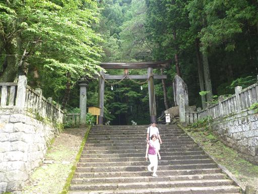
神社まで長い階段が続いている。
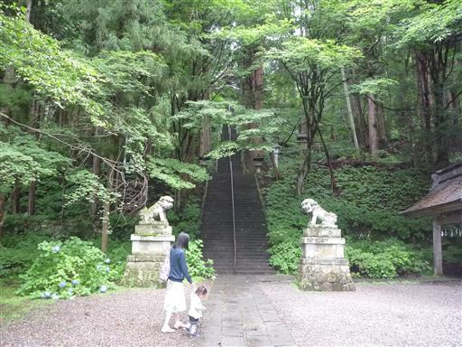
階段の両脇には杉の巨木が建ち並んでいて、かなりの迫力だ。
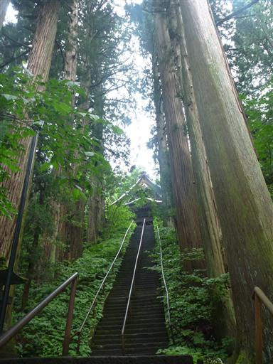
宝光社に到着。まだ朝早いためか人影は少ない。
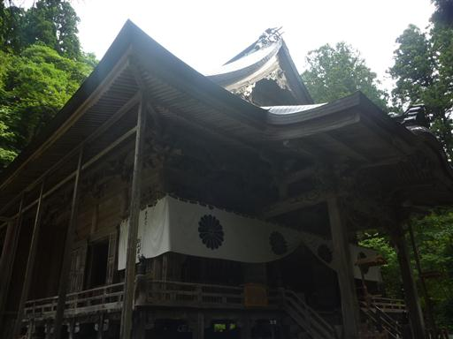
続いて中社を訪れる。宝光社からは1kmほど離れているため車で移動する。
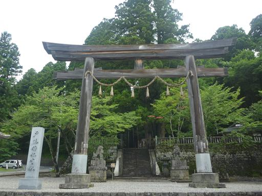
ひときわ目を引く大きな杉が立っている。
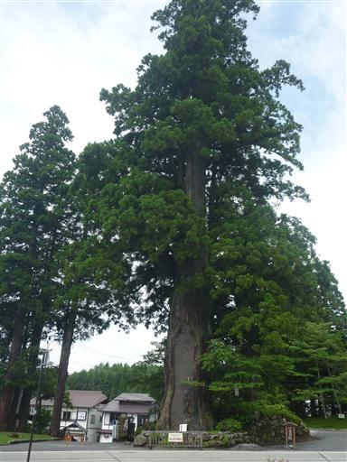
階段を登った先にも立派な杉がある。
側の標識に「戸隠の三本杉」と記載されているため、
この杉のことを言っているのかと思ったら、
先ほどの杉と、この杉と、もう一本の杉の三本の杉のことを指しているようだ。
ちょうどその3本が1辺72mの正三角形状に並んでいるらしい。
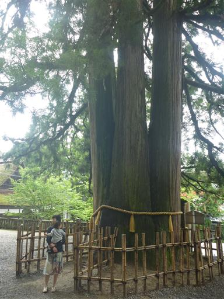
戸隠神社中社。宝光社とよく似た雰囲気だ。

続いて奥社に向かう。訪れる人が多いのか、こちらには大きな有料駐車場がある。
ちょうど5日前に有料化されたらしい。有料化は仕方ないとして、
すぐ隣に無料駐車場があるのはどうも納得がいかない。
有料化に反対している近くの蕎麦屋さんで昼食をとったら、一品サービスをしてくれた。
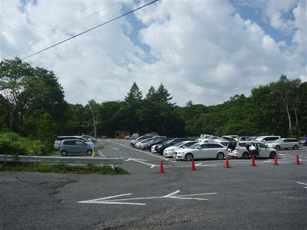
奥社に向かって歩き始める。奥社までは2kmほどの参道が続いている。
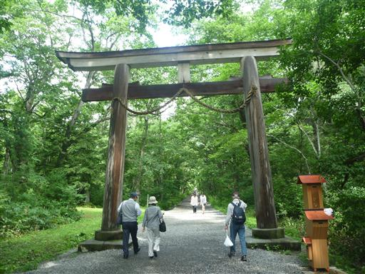
辺りは美しい森に覆われている。緑のトンネルの中を歩いていく。
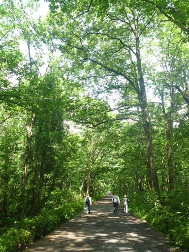
参道の中ほどにある随神門をくぐる。
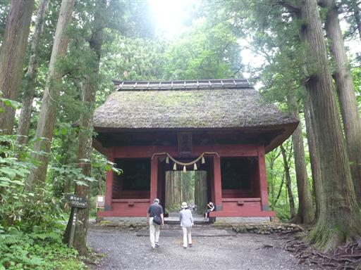
この先は圧巻の杉並木だ。
太くて大きな杉の木が、ずっと先の方まで並んでいる。
これらの杉は17世紀に植えられたと言われている。
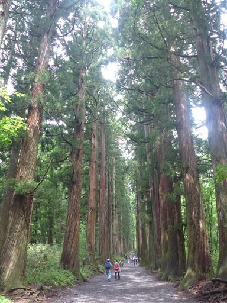
九頭龍社。目的地の奥社のすぐ下にある。
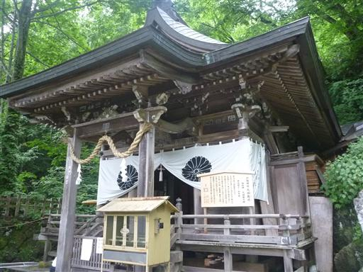
そして終点の戸隠神社・奥社に到着。
「これが奥社？」というほど何というか…近代的な建物である。
建物の雰囲気は宝光社や中社の方が良かった。
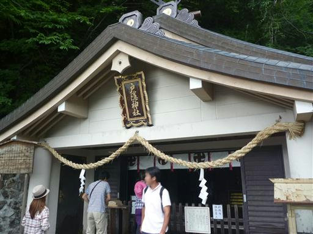
奥社でお参りをしていると、突然大雨が降ってくる。
大慌てで社務所の軒先に避難。雨を避けられなかったずぶ濡れの観光客が次々とやってくる。
今日は登山を控えて正解だったようだ。
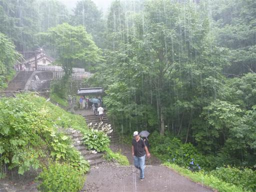
なかなか雨は降りやまないが、だいぶ小降りになったため傘をさして戻ることにする。
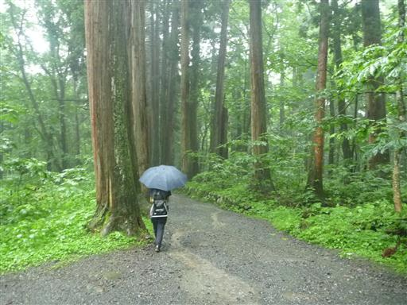
参道は川と化している。登山靴を履いてくるべきであった。
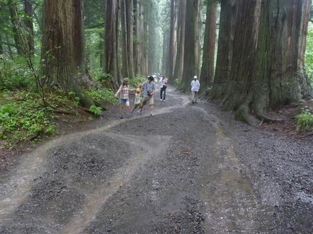
続いて鏡池に行く。大した展望を期待していなかったが、なんと雲が消えて西岳が見えている。
絵葉書では水面にきれいに山の景色が映っているのだが、
先ほどの雨の影響か池の水は茶色く濁っている。
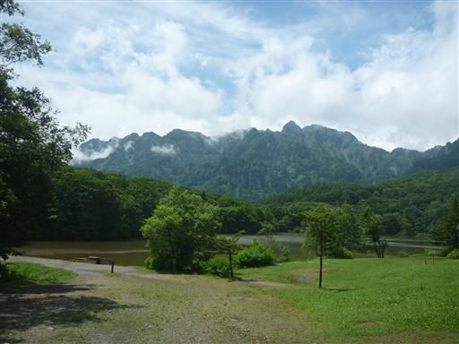
池の周りを一周できる遊歩道があるので歩いてみる。
道は池をかなり大回りしていて、池を望める場所はほとんどない。
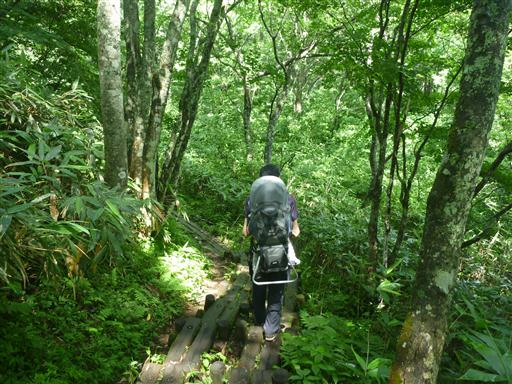
観光慣れしていないせいか、山に行かなければ案外する事が無い。
とりあえず近場にある戸隠牧場に行ってみる。
背後に見えているのは飯綱山だ。
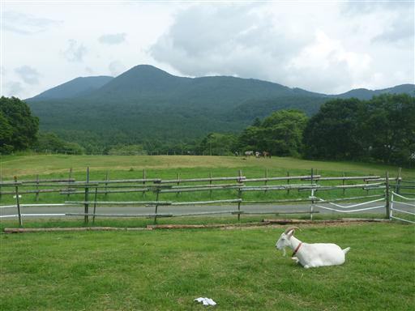
柵の中に入れるようになっていて、ヤギと触れ合える。
子供は怖がるかと思っていたら案外果敢に攻めている。ヤギの方は迷惑そうだ。
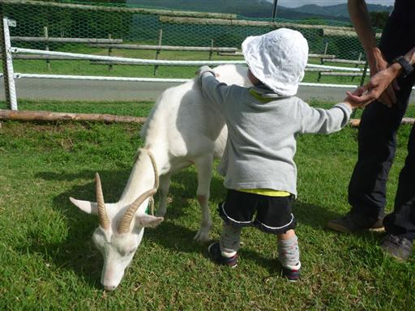
続いて馬。草を与えると食べてくれる。
こちらはさすがに怖いのか、少々及び腰だ。
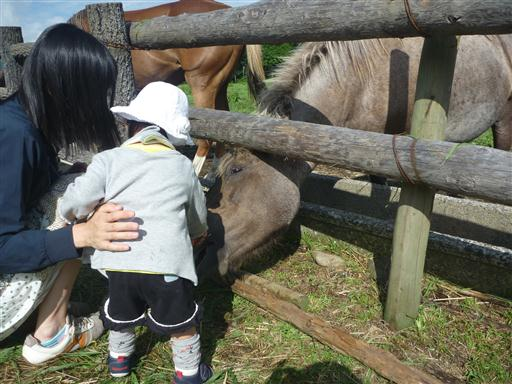
牧場を一巡りしたら宿に戻ってくる。
宿には大きな本棚があり、雑誌「山と渓谷」が並んでいる。
20年以上前に出版されたものもありパラパラとめくってみたが、
案外書かれていることは今と変わらない。
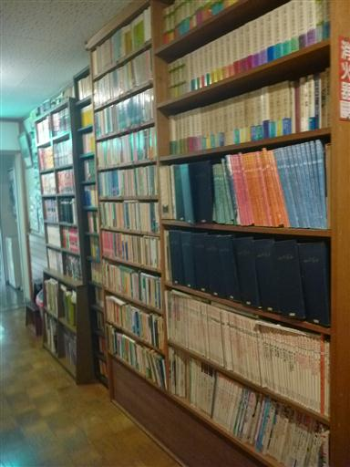